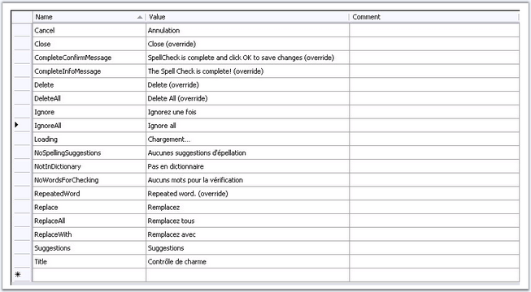
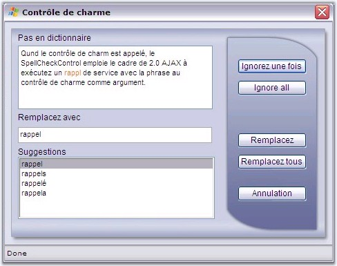

To create your own localization for the SpellCheckControl, follow the below given steps.
1. Create the App_Global Resources folder in the root of your Web application.
2. Create the SpellCheck.fr.resx file into it.
3. The English(en-US) is the default dictionary that is employed, which can be customized by providing the dictionary in '.dic' format. The lexicon being used must be placed under a folder, and corresponding path must be set using the DictionaryPath property.
|
<cc1:SpellCheckControl ID="SpellCheckControl1" DictionaryPath="App_Code/fr-FR.dic" runat="server" EnableViewState="False" ShowSpellCheckButton="False" > </cc1:SpellCheckControl> |
4. All resx files contain two columns: Name and Value. You need to localize the strings in the Value column of this resx file.

5. Run the application.

|
Properties |
Description |
|
AfterCallbackResponseProcessedScript |
Specifies the script that will be executed after callback result gets processed. |
|
AfterCallbackScript |
Specifies the script that will be executed after a callback request is sent to the server. |
|
BeforeCallBackResponseProcessingScript |
Specifies the script that will be executed before callback result gets processed. |
|
BeforeCallbackScript |
Specifies the script that will be executed before a callback request is sent to the server. |
|
Properties |
Description |
|
EnableCallbacks |
Specifies whether control refresh operations should be performed via callback or postback. |
|
EnablePostbacks |
Specifies that control refresh operations should be performed via postback. EnableCallbacks should then be set to false. |